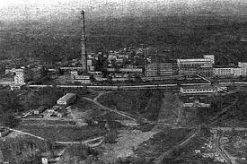

«Мы на службе у науки»
Музруков Борис Глебович — генерал-майор-инженер, организатор производства ядерного оружия. В
1947
—1953
гг. —
директор комбината № 817, в 1955
—1974
гг. —
директор ВНИИЭФ. Дважды Герой Социалистического Труда (1943
,1949
), лауреат Ленинской (1962
) и
двух Государственных (1951
, 1953
) премий СССР.
Роль в танкостроении:
В 1939
году Музруков стал главным инженером Уральского танкового завода
№183. Под его руководством завод к
1943
году стал ведущим производителем танков Т-34, бронекорпусов для
КВ и самоходных артиллерийских
установок, выпуская каждый 5-ый танк и САУ в стране. За свои достижения завод был многократно
награжден и
удостоен переходящего Красного Знамени. В 1943
году Музруков был
удостоен звания Героя Социалистического
Труда.
Ядерная промышленность:
В ноябре 1947
года Борис Музруков стал директором комбината “Маяк”
(Челябинск-40/Озёрск), ключевого элемента
советского атомного проекта, отвечающим за производство плутония. Основной задачей “Маяка”
было производство
плутония-239 для атомной бомбы. Музруков руководил всеми этапами производства, включая добычу
урана, его
переработку, разделение и очистку плутония, а также следил за оборудованием, технологиями и
оптимизацией
процессов для максимальной эффективности.

Вклад в ядерное оружие:
Курчатов ознакомил Музрукова с задачами “Маяка” по получению плутония. Прибыв на
комбинат в конце 1947
года,
Музруков быстро организовал работу, объединив научные исследования с нуждами производства. Под его
руководством были тысячи строителей. В августе 1949
года первый
плутониевый заряд был отправлен в КБ-11, что
привело к успешному испытанию атомной бомбы, за что Музруков получил вторую звезду Героя
Социалистического
Труда. В 1953
году он возглавил 4-е Главное управление, а в 1955
году – КБ-11, где успешно испытали
термоядерный заряд РДС-37. Музруков уделял внимание организации, взаимодействию подразделений, понимал
проблемы специалистов и контролировал производственные процессы.